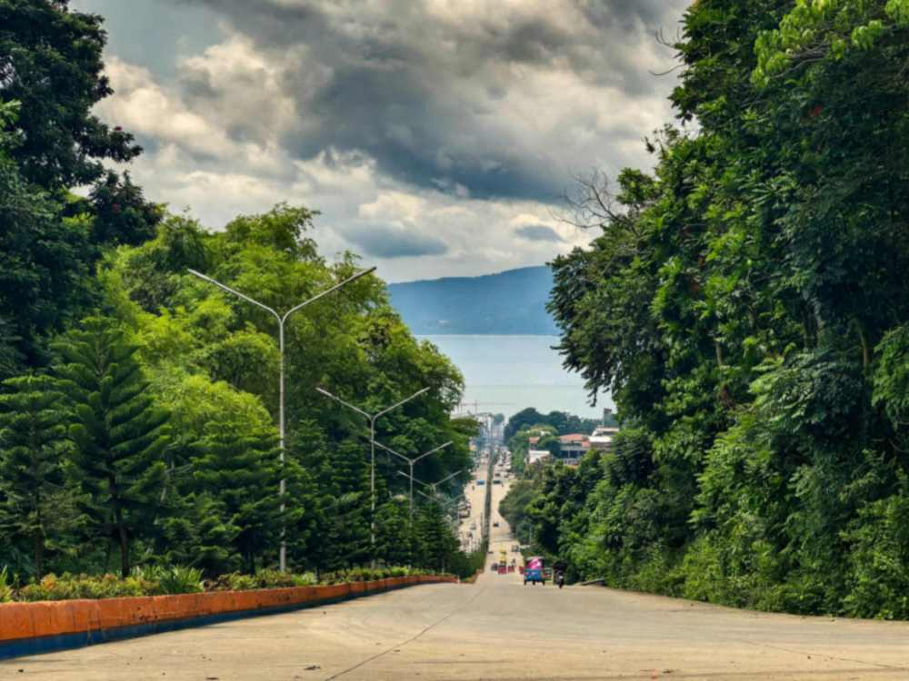

Pagadian is built on a slope. The capital of Zamboanga del Sur climbs straight up from the shore of Illana Bay, and many of its streets are steep enough that an ordinary tricycle would struggle with them. The city's answer was a tricycle with a tilted cab, its passenger seat set at an angle of roughly 25 to 40 degrees so riders sit level while the vehicle points uphill. No other place in the Philippines runs public transport built that way.
That tilted tricycle is the best way to understand the city, and it is also on its way out. Newer Bajaj units, known locally as bao-bao, are quieter, roomier and cheaper to run, and they now make up most of the fleet. The leaning models still work the hills, but there are far fewer of them each year. If you want to ride one, sooner is better than later.
This guide covers what makes Pagadian worth a stop, the handful of places most visitors actually go, how to get in and around, and the timing details that decide whether a trip to the islands or the falls goes well.

Why the tricycles lean, and how to ride one
Picture the standard Philippine tricycle on a 20 percent grade. The passenger cab tips backward, the load shifts onto the rear, and the ride feels like sitting in a reclining chair that is about to fall over. Pagadian's builders solved this by raising the front of the sidecar and lowering the back, so the cab sits at an angle on flat ground and levels out on a climb. On a level street the effect is strange. Going up the long roads toward the bus terminal or the hilltop districts, it suddenly makes sense.
You do not need to book anything. Stand on any busy street in the city center and wave one down; both the old tilted units and the bao-bao pick up passengers. Short trips within town are inexpensive, but fares have moved over the years and longer uphill runs cost more, so agree on the price before you get in. Small bills and coins make this easier, since drivers often cannot break a large note.
For the full effect, ask to go up toward the Integrated Bus Terminal, which sits on a hill, or to the Rotonda. Those climbs are where the design earns its keep.
The Rotonda and Plaza Luz
The Pagadian Rotonda is a circular park and roundabout where North Diversion Road meets F.S. Pajares Avenue. Its main draw is the view: the city drops away below you and Illana Bay opens out to the south. Late afternoon is the easiest time to visit, when the heat eases and the light over the water softens. Snack vendors tend to gather in the evening, so it doubles as a cheap place for merienda.
Plaza Luz, across from City Hall, is the city's evening hangout. Its musical fountain usually starts around 6 p.m., and families fill the benches once it does. Pair the two on your first night: the Rotonda for sunset, then a tricycle down to the plaza for the fountain show and street food.
If you have time in the morning, the Cathedral of the Most Holy Name of Jesus in San Francisco District dates from 1968. The Provincial Government Complex is also worth a walk. It holds Unity Park, a monument to the three communities that shape the province: the Subanen, the Muslim population and the Christian settlers.
Dao Dao Islands and Puting Balas
The most popular half-day trip leaves from the city seaport. Dao Dao Dako, the larger of the two Dao Dao islands, covers about a hectare and sits a short 7 to 10 minute motorboat ride out in the bay. Its reef includes artificial structures made from old tires, placed to give marine life something to grow on. Dao Dao Gamay, the smaller one, is really a sandbar that goes partly underwater when the tide comes in.
Tide is the detail that makes or breaks this trip. Puting Balas, a white sandbar nearby, only shows itself at low tide, and Dao Dao Gamay is at its best then too. Check a tide table for Pagadian before you go and plan your boat hire around the low-water window rather than the clock. Arrange the boat at the port, confirm the fare and the return time with the boatman, and bring water and shade, because there is little cover on a sandbar at midday.
Pulacan Falls in Labangan
For a break from the coast, Pulacan Falls sits about 12 kilometers from the city in the neighboring town of Labangan. The falls feed the local irrigation system and share their surroundings with a permanent scouts campsite used for regional jamborees, so weekends can be busy with groups.
Getting there by public transport takes a little planning. From the Integrated Bus Terminal, board a bus heading to Ozamiz via Osmeña and ask to be dropped near Camp Major Cesar Sang-an or at the falls. Not every conductor knows the stop, so have an offline map ready. The last stretch involves a short uphill walk. Ask about the entrance fee and swimming conditions when you arrive, and skip the plunge pool after heavy rain, when the water runs fast and brown.
Getting to Pagadian and getting around
Pagadian Airport is in Barangay Muricay, about 5 kilometers from the center, and it is the only airport in Zamboanga del Sur. Cebu Pacific flies to Manila, and Cebgo runs a Cebu route a few times a week on small turboprops, about 1 hour 15 minutes in the air. Schedules on both routes change by season, so check them before you plan the rest of the trip.
By road, the main Integrated Bus Terminal has buses to Zamboanga City, Dipolog, Cotabato City, Davao City and General Santos. A second terminal, the Annex Palacio, handles minibuses to nearby towns, especially on the Baganian Peninsula. The seaport has passenger ships to Zamboanga City, Cotabato City and ports in Sulu and Tawi-Tawi; our guide to ferry routes and booking covers how to buy tickets and what to expect on board.
Pagadian also pairs well with Dapitan, on the northern coast of the peninsula and reachable by bus. Two or three days in Pagadian followed by the Rizal Shrine in Dapitan makes a reasonable week on the Zamboanga Peninsula.
When to go, and what to check first
The city's biggest celebration is the Pasalamat Festival, held on the third Sunday of January in honor of the Santo Niño, with a regatta on the bay, trade fairs and a parade. Araw ng Pagadian falls on June 21, marking the city's charter. In September, the week-long Megayon Festival celebrates the province's Subanen, Muslim and Christian communities through music, dance, food and indigenous sports. Rooms fill up during festival weeks, so book early if your dates overlap.
Outside festival season, plan around the heat and the afternoon rain. Mornings are best for the islands, late afternoons for the Rotonda.
One honest note before you book. Several foreign governments issue travel advisories that cover parts of western Mindanao, and travel insurance policies sometimes follow them. Read the current wording for Zamboanga del Sur before you commit, and see our piece on whether Mindanao is safe to travel for how those advisories work. Locally, the city tourism office is the best place to ask about boat hire, fees and any areas to avoid.
Pagadian rewards a slow visit. Ride up a hill in a tricycle that leans the wrong way on flat ground, watch the bay from the Rotonda, time your boat with the tide, and you will have seen the version of the city that is quietly changing.


Comments
No comments yet. Been here recently? Share a tip or ask a question.
Leave a Reply